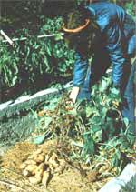

Homegrown yams are sweeter and more colorful than the store-bought kind. The bush-topped variety produces tasty, full-sized potatoes, but no matter which type you grow, bush or vine, when you grow your own yams, they're sure to be a culinary treat.